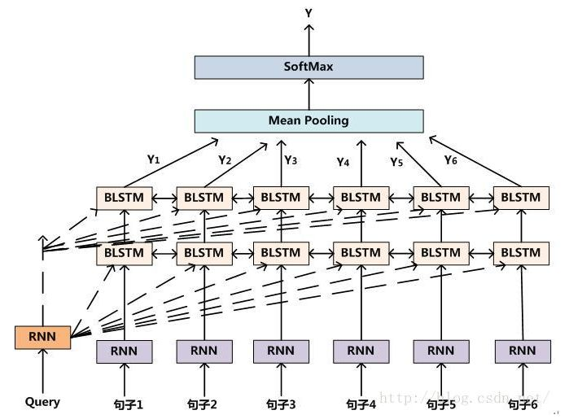

This is a list of my research projects.
Time: Aug. 2016 - Jun. 2017 (Expected)

Code generation with recurrent neural network
I'm now writing a recurrent neural network which can generate C code automatically. It takes the descripition of a specific problem as input and generate the code which can solve this problem. I use a four-layer network in which each layer contains 1000 LSTM cells.
Above are images of typical RNN.
I have already finished the first edition of my network and begun to train it. I'm still trying to figure out how to improve its performance.